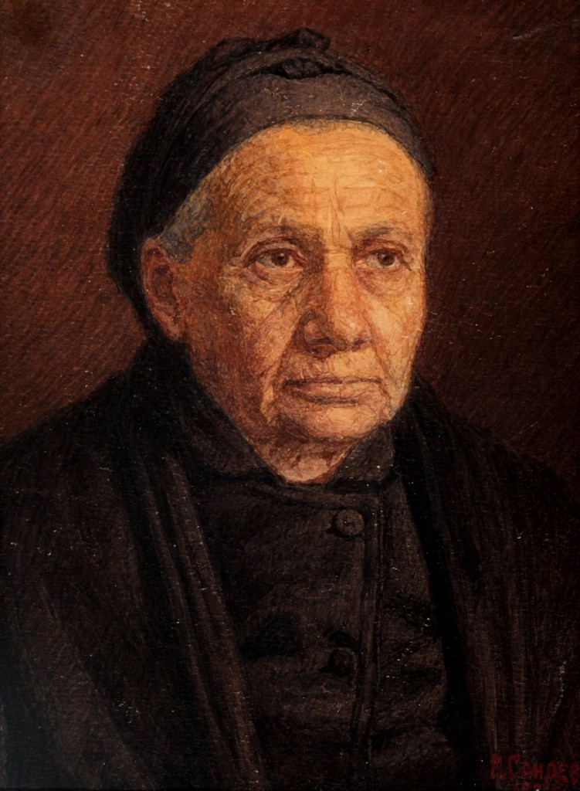
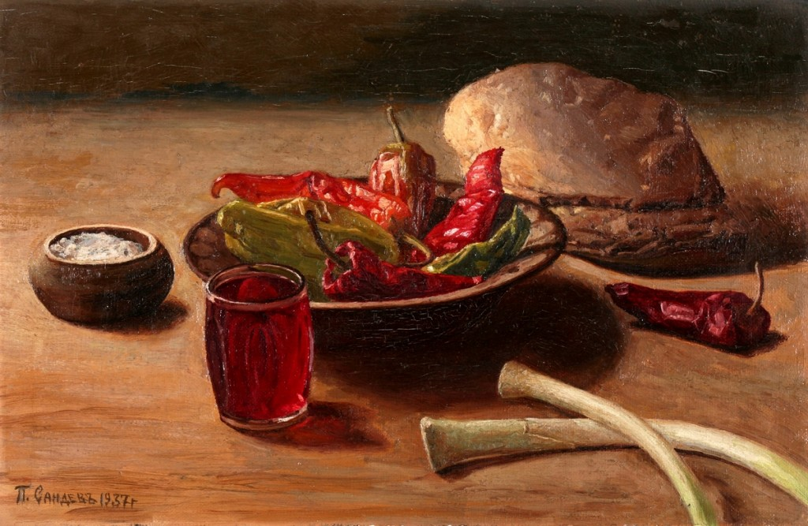
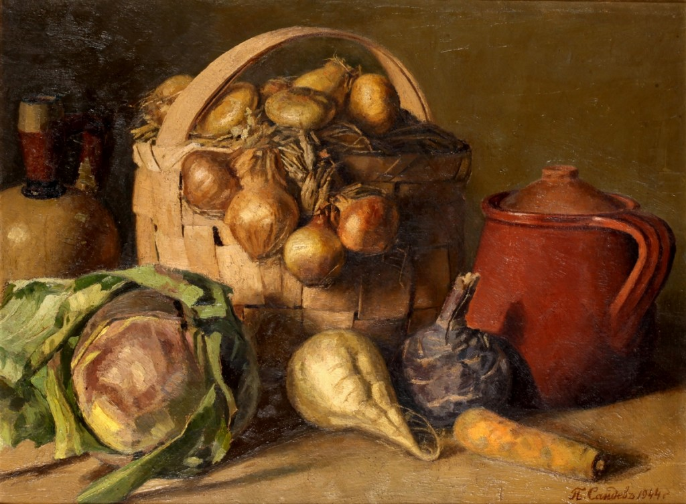

Патрики Сандев
1881-1959
Биография
Патрики Сандев Вълков е живописец, роден на 23.05.1881г в Казанлък, почива на 17.12.1959г. в Дупница. Завършва (1904) Рисувалното училище в София.
Дълги години учителства в Дупница.
Работи в областта на пейзажа, портрета, натюрмота, фигуралната композиция. Излага свои творби на редица ОХИ.
По-известни произведения: "Селска закуска" (1937), "Натюрмот" (1949), "В полите на Рила" (1952), "Натюрмот" (1953), "Кория край с. Крън, Казанлъшко" (1953) и др.
- 
- 
- 
-

Допълнителна информация:
На страницата на Художествената галерия на Стара Загора има изчерпателно поднесен материал за Патрики Сандев.